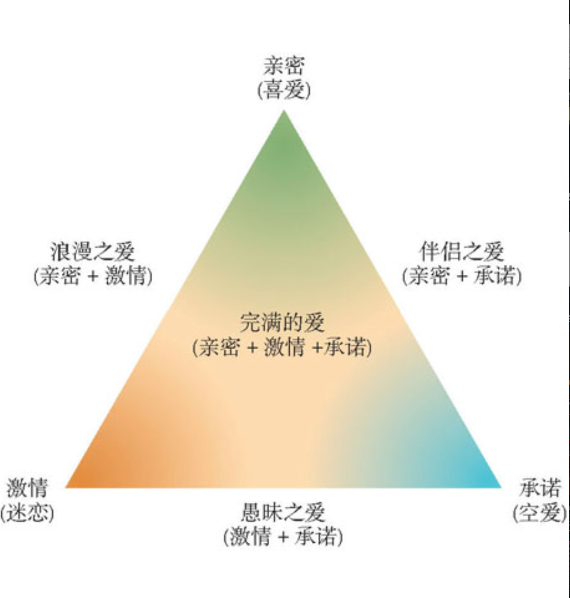

Introduction
我们都是自己的陌生人
自我概念：我是谁
有意识的自我控制
自尊
自我服务偏见
自我表现
魅力何来 人际吸引的秘密
什么造就了友谊和吸引
什么是爱情
如何促进亲密关系
亲密关系是如何促进健康与幸福感
他人即地狱 人际冲突的源起与化解
偏见：我们为何不喜欢他人
偏见的社会根源
偏见的动机根源
偏见的认知根源
偏见的后果
攻击行为：伤害他人
攻击行为的影响因素
如何减少攻击
冲突与和解
怎样获得和平
看不见的影响力
从众
说服
群体影响
Published with GitBook
什么是爱情
激情之爱
斯腾伯格爱情三成分理论：
情欲之爱：充满自我展露的浪漫激情的爱
游戏之爱：视爱情为无需负责的游戏
友谊之爱：如友谊般的感情

关于激情之爱的一种理论：
激情之爱就是由于我们在生理上被有吸引力的人所唤醒而知觉到的心理体验。
results matching "
"
No results matching "
"